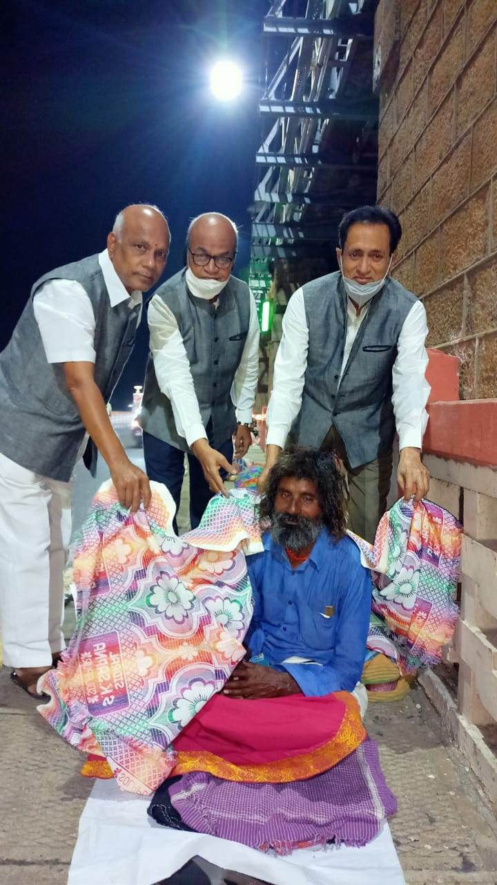
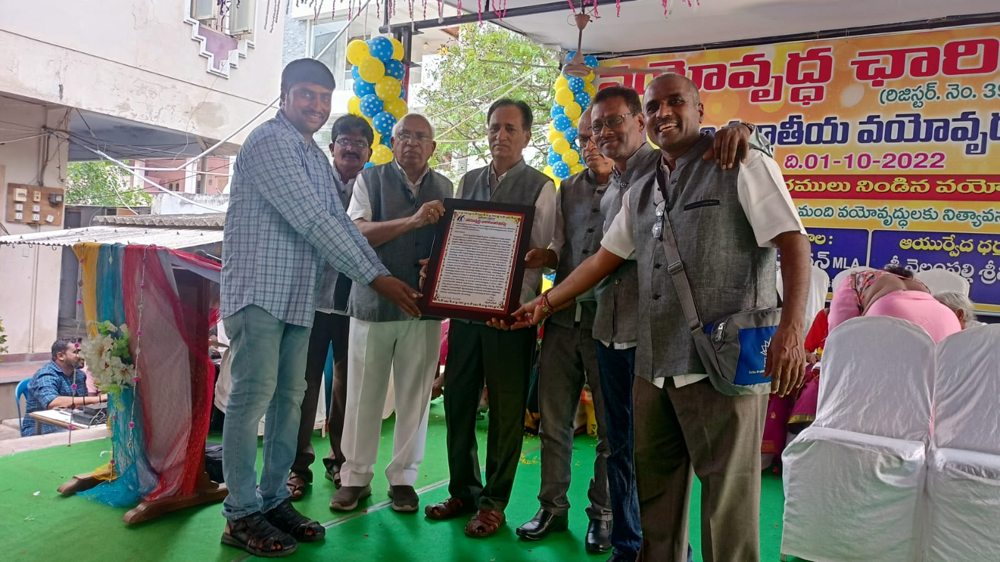
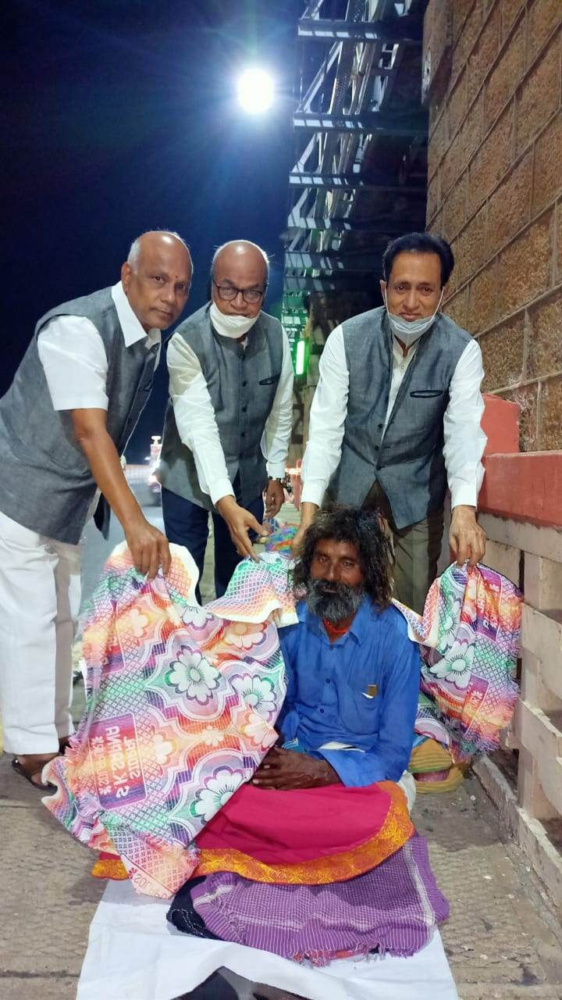
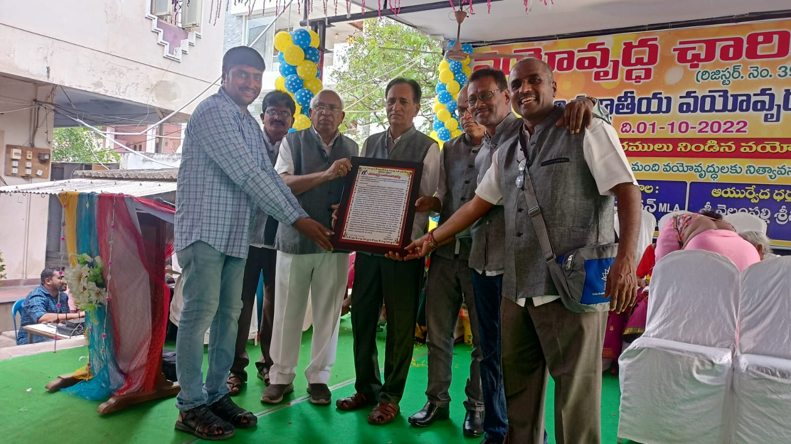

Monthly Event
We cordially invite you to join us on the third Sunday of every month for our special event at
the vicinity of Vijay Nursing College, Shri Thatti Arjuna Rao Garu at Rokallapalem, Vijayawada.
During this event, we distribute essential provisions to vulnerable elderly individuals.
5kg Rice
1kg Toor Dal
½kg Cooking Oil
¼kg Tamarind
Free immunity booster tablets
Seasonal Support
we understand the importance of adapting to the changing seasons to provide comprehensive
support for the elderly in our community. In addition to our monthly provisions, we extend a
helping hand during every season to make sure our elderly friends are comfortable and cared for.
Weekly Medical Camp
Every Sunday, we conduct a free medical camp to address the health needs of the elderly.
Specialist doctors generously volunteer their time to provide medical check-ups and
consultations, ensuring that our elderly community receives the necessary healthcare support.
Free medical check-up
Free immunity booster tablets
Cultural Events
On special days and festivals, we organize cultural events and relaxation activities for the
trust beneficiaries. These activities include singing competitions and traditional/cultural
dressing competitions, creating moments of joy and fun in the lives of our elderly friends.
Fun Activities
Traditional
Moments
Competitions
Honorary Awards
Each year, on the "International Day of Older Persons" celebrated on October 1st, we honor
elderly individuals who have reached the remarkable milestone of 100 years of age. About 20
centenarians from the districts of Krishna, Guntur, and West Godavari are identified and
presented with prestigious awards in a dignified ceremony.
Support in Their Lasts
In the unfortunate event of the passing of our trust beneficiaries, we extend our respect and
provide financial assistance of Rs. 2000/- on behalf of the trust to help cover funeral
expenses, ensuring they are treated with dignity even in their last journey.
Future Initiatives
In addition to our services for the elderly, we are planning to initiate other social service
activities with the support of donors. Our future plans include establishing a library with
traditional and cultural books, collecting reusable books and benches, and distributing
conditional used clothing to those in need.
Expanding Our Reach
Books
Benches
Service
Appeal for Financial Support
We have achieved a lot in the past 15 years with the generous contributions from philanthropists,
but we aspire to do more. Your small contribution can inspire us to extend our services to more
elderly citizens, providing them with a happier and more dignified life.


 


